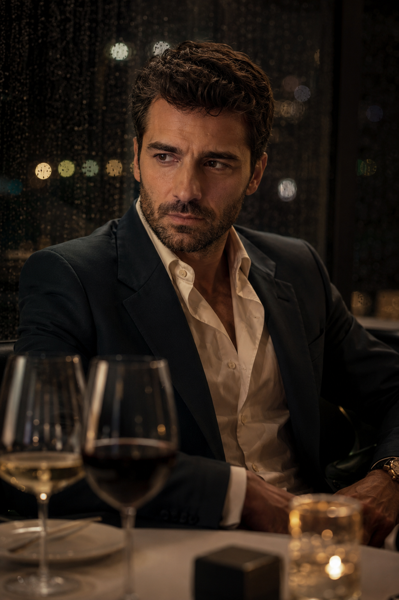

El anillo que no desapareció
Una cena perfecta. Una propuesta esperada. Una caja vacía. Todos cuentan una historia distinta, pero uno está mintiendo.
Esta noche iba a ser inolvidable.
Martín había preparado una propuesta de matrimonio. Reservó el restaurante, eligió el vino y compró el anillo.
Pero cuando llegó el momento... el anillo había desaparecido.
Todos cuentan una historia distinta. Pero uno está mintiendo.
Restaurante elegante de noche, lluvia contra ventanales, copas servidas y una caja de anillo sobre mantel blanco.
¿A quién querés escuchar primero?
Elegí cualquier orden. Después de cada declaración, la mesa decide si le cree.
Martín
¿Le creés? Tomen un sorbo y discutan durante un minuto antes de seguir.

Video IA placeholderLa selfie
Creíamos tener toda la historia... hasta que apareció esto.
Una foto tomada durante la cena muestra a alguien en un lugar donde dijo no haber estado.
¿Cambiaron de opinión?
Selfie elegante y algo borrosa. En segundo plano aparece una figura que contradice su declaración.
La cámara
La cámara no mostró el robo. Pero mostró algo raro.
Un movimiento cerca de una zona restringida cambia el centro de sospecha.
¿Eso prueba culpa o solo nervios?
Plano granulado de seguridad. No se ve el robo, solo una entrada o salida sospechosa cerca de la caja fuerte del restaurante.
El audio cortado
No alcanza para condenar a nadie. Alcanza para dudar de todos.
"No puedo hacerlo esta noche... si se enteran, se termina todo."
¿Quién estaba intentando evitar que pasara algo?
Interfaz de audio tipo mensaje, onda dorada sobre fondo oscuro. La frase se corta justo antes de revelar a quién pertenece.
Ya no quedan más pruebas.
Solo una persona está mintiendo. Antes de votar, cada uno tiene 30 segundos para defender su teoría.
Mesa vacía después de la cena: copas a medio terminar, servilletas movidas, caja del anillo cerrada y lluvia más lenta.
Elegí quién miente.
No votes por impulso: votá por la versión que menos resiste la conversación.
El caso nunca fue sobre el anillo.
¿Qué hubieras hecho vos si estabas en esa mesa?
Detective en restaurante casi vacío. Luz baja, caja fuerte desenfocada detrás y tono de revelación sobria.